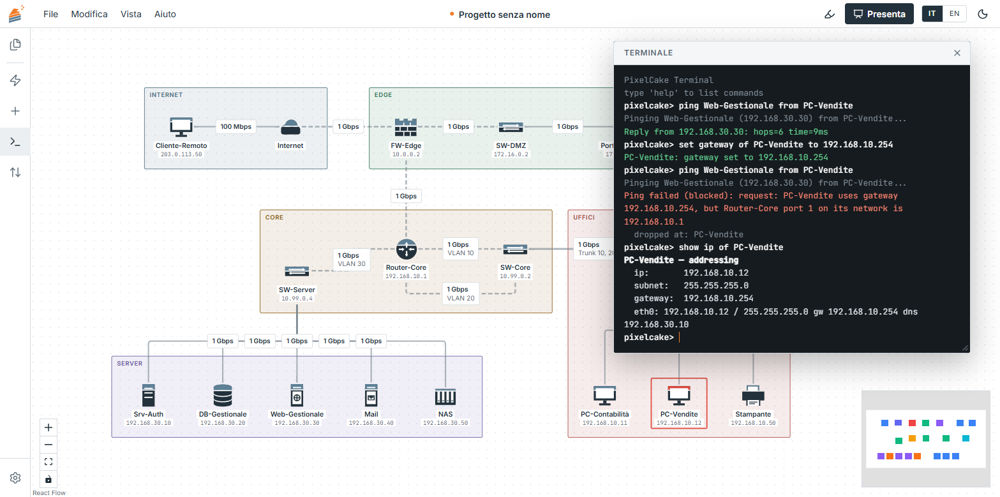
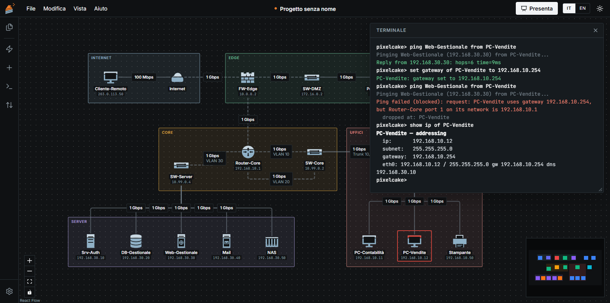
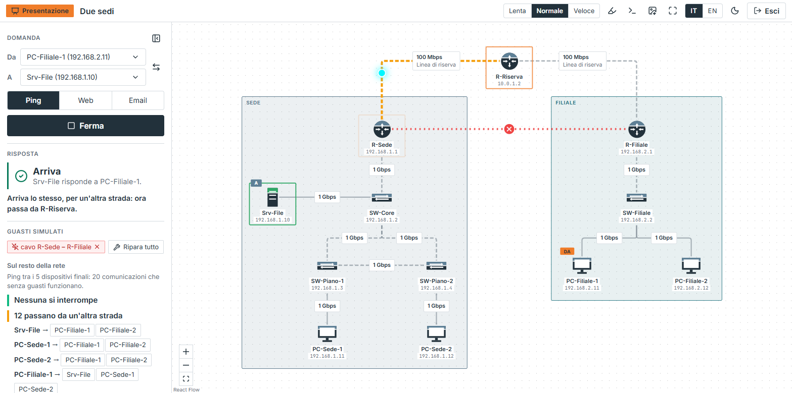
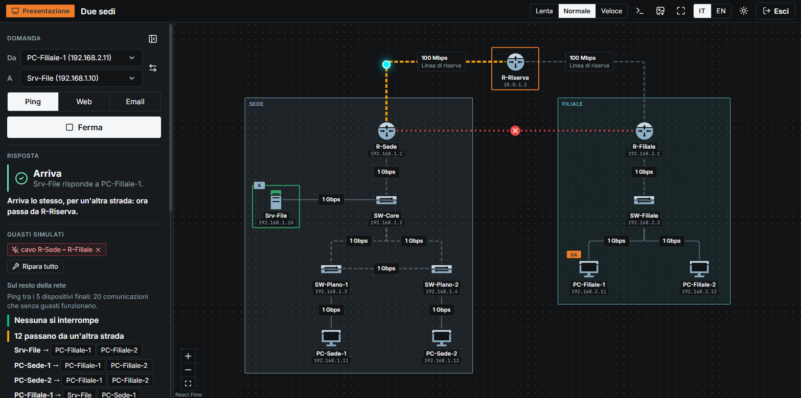

Il disegno di rete che ti risponde.
PixelCake è un ambiente visuale per progettare piccole reti. Disegni la rete, la configuri davvero, poi le chiedi: questo PC raggiunge quel server? Se non lo raggiunge, vedi dove si ferma il pacchetto, e perché.
nel browser · senza account · open source
Un solo posto per fare tre cose con una rete. Sullo stesso disegno.
Disegna
Disegnala come su una lavagna, con la configurazione vera dietro ogni linea. Di qualunque vendor, o di nessuno.
- Ventiquattro tipi di dispositivo, ciascuno con il suo disegno
- Indirizzi su ogni porta dei router e su ogni scheda di rete
- VLAN porta per porta, di accesso e trunk, ognuna con un nome che vale per tutto il progetto
- Rotte statiche, con una di riserva per quando la linea cade
- Zone di sicurezza e regole del firewall, in ordine
- NAT verso Internet, e inoltri per ciò che va raggiunto da fuori
- DHCP per chi prende l'indirizzo da solo, DNS per chiamare un dispositivo per nome
- Riquadri con un nome dietro i gruppi di dispositivi, e una nota su qualunque dispositivo
Chiedi
Chiedi a parole semplici: questo raggiunge quello? Il pacchetto viene seguito salto per salto, e la risposta dice quale dispositivo ha deciso, e con quale porta, rotta o regola.
Da un pannello con due menu, oppure dal terminale integrato: un piccolo linguaggio di comandi in inglese, uguale per ogni vendor, senza sintassi proprietarie da ricordare.
Presenta
Metti via gli strumenti per disegnare e mostrala a chi non era nella stanza. Scegli due dispositivi sul disegno per fare una domanda, e guarda partire il pacchetto.
Poi rompi qualcosa, un cavo o un dispositivo. Vedi subito se il traffico trova un'altra strada, e quali comunicazioni si interrompono. Il disegno non cambia.
Finita la riunione, consegna il canvas come immagine, PNG o SVG, con la domanda, la risposta e i guasti scritti sotto.
Com'è fatta




Cosa verifica, e cosa no
- Cavi e porte, VLAN per VLAN
- Subnet, gateway e tabelle di instradamento, salto per salto
- Zone e regole del firewall, risposte comprese
- NAT e inoltri: gli indirizzi privati non attraversano Internet
- Gli indirizzi assegnati dal DHCP, e i nomi chiesti al server DNS del disegno
- Un cavo o un dispositivo guasto, e la rotta di riserva che subentra
- I singoli frame: niente ARP, niente tabella MAC, niente tempi
- Il tempo: un indirizzo assegnato non scade, un nome non resta in cache
- Instradamento dinamico e spanning tree
- I numeri di porta: i servizi sono ping, web, email e DNS
Serve a esplorare e spiegare una piccola rete. Non usare le sue risposte per validarne una reale. Quello che non è simulato lo dice, con una nota accanto alla risposta.
Niente tra te e il disegno
Nel tuo browser
Niente da installare, e nessun server dietro. Apri la pagina e disegna.
I tuoi file
Un progetto è un file .pixelcake.json sul tuo disco.
Nessun account, e non si carica niente da nessuna parte.
Open source
Rilasciato con licenza AGPL-3.0. Leggilo, usalo, modificalo: github.com/pixelcake-dev.
Provalo su una rete già disegnata.
Dalla schermata di benvenuto carichi con un clic una piccola azienda: uffici e Wi-Fi in due VLAN, una sala server, un portale pubblico in DMZ dietro un firewall. Chiedile qualcosa.